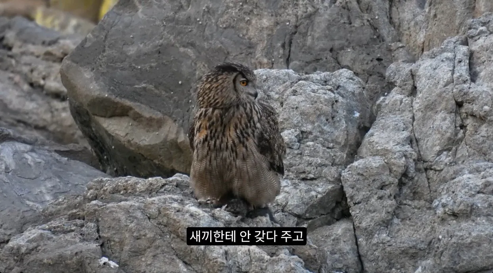
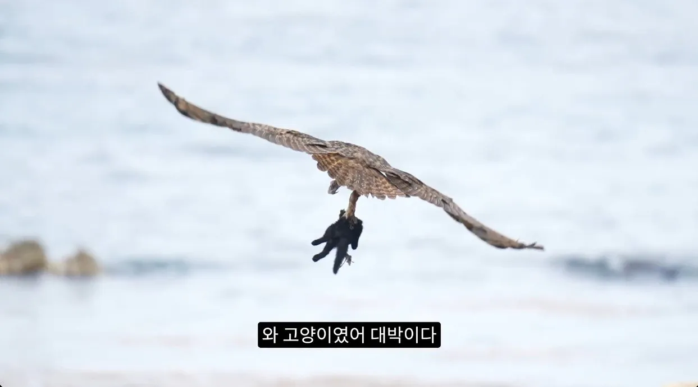
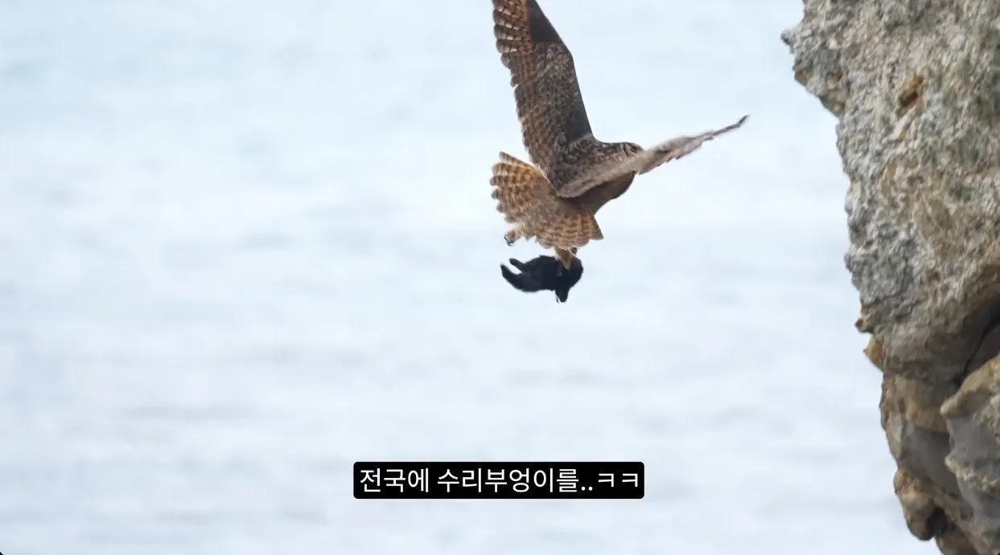
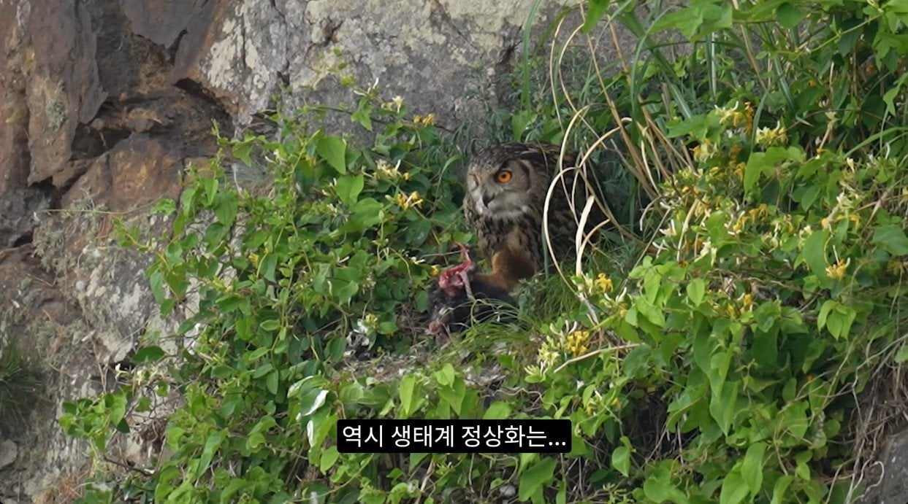

들고양이 사냥하는
천연기념물 수리부엉이
캣맘새끼들은 부엉이랑 천연기념물 따위는 중요하지않아요 오직 해로운 고양이만 생각중 ㅋㅋㅋㅋㅋㅋㅋㅋㅋ
출처 : 유튜브 새덕후




들고양이 사냥하는
천연기념물 수리부엉이
캣맘새끼들은 부엉이랑 천연기념물 따위는 중요하지않아요 오직 해로운 고양이만 생각중 ㅋㅋㅋㅋㅋㅋㅋㅋㅋ
출처 : 유튜브 새덕후
댓글
수집 당시 댓글 30개
야율아보기 · 3 일 전
구리 아작내는 수리
자라칩 · 3 일 전
애들아 구리 아작나 어떡해ㅜㅠㅠ아ㅜ 발ㅜㅜㅜ
ㅇㅇ1 · 3 일 전
털바퀴 많이먹고 잘 자라야한다
밤무대평정 · 3 일 전
털바퀴 쫌 짤텐데..물 많이마시렴
미츠루기 · 3 일 전
근데 수리붕 낮에는 여차하면 좆냥이한테 당할 수도 있는데…. 깔끔하게 사람이 고양이 싹 밀어야됨
MS08소대 · 3 일 전
날개 최대 2미터에 4키로 까지 자라는놈인데 발톱도 ㅈㄴ게 날카로운데 쥐는힘이 성인남자도 간단히 못품 공중에서 낚아채는 사냥법 특성상 성체 길고양이 수준으로도 절대 못이김.. 실제로 고양이들 잡힌 사례나 동영상보면 성체 고양이도 제법 나옴 이 새낀 원래 급하면 삵도 잡아먹는놈이라 생태계 피라미드에서 제일 꼭대기에 있어서 절대 ㅈ밥아님 덤으로 천연기념물이라 촉법소년
미츠루기 · 3 일 전
낮에 상대적으로 취약하니까 그렇지 난 짹짹파라 단 한마리의 수리붕도 고양이한테 당하는거 용납 못함
사텐빳따 · 3 일 전
잡아다 공중서 떨구면 낙사아닌교?
유종애미를거두는자 · 3 일 전
아니..삵도 이긴다고? 삵은 고양이 1.5배빵 아니냐
뀱밥 · 3 일 전
부엉이 성체 크기가 있어서 낮이라고 고양이가 부엉이한테 덤빌일은 거의 없다는데 부엉이는 주로 밤에 사냥하는데 소리가 안나기때문에 고양이는 대처법이 없다고
술취한고양이 · 3 일 전
고양이도 야행성 아님?
친절한그렐로드 · 3 일 전
끼숩다
꿦꿧꿨꿩꿪꿫 · 3 일 전
역시 수붕이야 믿고있었다구!
인생겜하러옴 · 3 일 전
캣맘 저거보면 눈까뒤집고 천연기념물이고뭐고 달려들듯 ㅋㅋㅋㅋ
사촌간불알빨기 · 3 일 전
원앙의 복수다...!
STHSTK · 3 일 전
잘했네
갑오징어 · 3 일 전
서슴없이 불효ㅋㅋㅋㅋ
조용히하세엽 · 3 일 전
진짜 머싯다
파랑1 · 3 일 전
너만 믿을게
한강뷰 · 3 일 전
5년전에도 본 짤인데
스네크 · 3 일 전
아아 부엉이님 더 많은 털바퀴를 잡아죽여주세요!
푹찍 · 3 일 전
새덕후가 너무 흑화해서 방향을 잘못 잡은 거 같은데... 캣이터 더 아울 로 컨셉을 잡아서 영상 만드는게 무슨 효과를 누리겠어... 본인의 전문성을 발휘하고 고양이의 해약에 대해 생태계 일환으로 드라이하게 다뤄야 할 내용을 고양이 죽여 고양이 죽어 고양이 죽여로 만들면 합리적으로 설명했을 때 이해할만한 사람들도 새덕후의 주장을 혐오로밖에 안볼 듯
푹찍 · 3 일 전
캣망구들한테 시달렸을건 알겠는데 이건 오히려 새덕후 멘탈이 걱정되는 영상임
흑혈 · 3 일 전
이미 멘탈 털리고 흑화한거임 이번에도 행사 취소되고 하는거 보면 영원히 싸울듯
MercuryHg · 3 일 전
원앙시해자시해자
강알리 · 3 일 전
좆냥이 컷~!
0w0 · 3 일 전
고양이 러버지만 수리부엉이도 먹고살아야하잔슴
든든뜨끈국밥 · 3 일 전
털바퀴 캇뜨
xsssx · 3 일 전
오피스텔 5년차 살고있는데 누가 계속 사료를 주차장이랑 건물 사이에 숨겨놔서 바퀴벌레가 생겼음 ㅜㅠ 개붕이들은 이사갈 곳에 사료있는지 잘 확인하라구
곧장 · 3 일 전
킹리갓엉이!!!